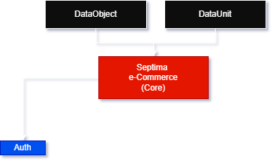

Genel Bakış
Bu kaynak, Septima e-Commerce yazılımı hakkında genel bilgi, yardım ve referans bilgileri içerir.
Yazılım Hakkında
Septima e-Commerce, e-ticaret sistemleri için geliştirilmiş bir yazılım çözümüdür. PHP, Laravel, Inertia.js, Tailwind CSS ve React.js teknolojileri kullanılarak geliştirilmiştir. Sistem, e-ticaret işlemlerini kolaylaştırmak ve müşterilerin ihtiyaçlarına cevap veren bir platformdur.
Yasal Bilgiler
Septima e-Commerce yazılımının tüm hakları Astro Yazılım Bilgi Teknolojileri'ne aittir. İzinsiz kopyalanamaz ve dağıtılamaz.
Proje Genel Yapısı

Core
Core, sistemin temel fonksiyonlarını içeren bir merkez dizinidir. Bu dizinde; DataUnit, DataObject gibi proje genelinde kullanılan temel yardımcı sınıflar bulunur.
DataObject
DataObject, sistemdeki modüller arasındaki iletişimi kolaylaştırmaya olanak sağlayan bir ortak iletişim (veri) formudur. Veri birimleri DataUnit'ten kalıtılmıştır.
DataUnit
DataUnit, sistemde kullanılan modüller arasındaki iletişimi kolaylaştırmaya olanak sağlayan DataObject'larda kullanılan veri birimlerinin ata sınıfıdır. Tüm veri tipleri bu ata sınıftan kalıtılmıştır.
Events & Listeners
Olaylar (Events) ve dinleyiciler (Listeners), sistemde gerçekleşen belirli olaylara tepki vermek için kullanılan yapılar ve sınıflardır. Olaylar, sistemde meydana gelen belirli durumları temsil ederken, dinleyiciler bu olaylara tepki vermek için kullanılan sınıflardır.
Events (Olaylar)
Olaylar, sistemde gerçekleşen belirli durumları temsil eden sınıflardır. Örneğin, bir kullanıcı giriş yaptığında veya bir sipariş oluşturulduğunda belirli olaylar tetiklenebilir. Olaylar, sistemin olay tabanlı programlama yaklaşımını benimsemesine olanak tanır ve bu sayede sistemin esnekliğini ve genişletilebilirliğini artırır.
| Olay Adı | Açıklama |
|---|---|
| BeforeLoginEvent($authCredentials) | Kullanıcı giriş yapmadan önce tetiklenen olaydır. |
| AfterLoginEvent($authCredentials, $status) | Kullanıcı giriş yaptıktan sonra tetiklenen olaydır. |
| LoginLockedOutEvent($authCredentials) | Kullanıcı çok sayıda başarısız giriş denemesi yaptıktan sonra kilitlendiğinde tetiklenen olaydır. |
| OtpGeneratedEvent($phone, $otp) | Kullanıcı telefon numarası ile giriş yaparken OTP (tek kullanımlık şifre) oluşturulduğunda tetiklenen olaydır. |
Listeners (Dinleyiciler)
Dinleyiciler, belirli olaylara tepki vermek için kullanılan sınıflardır. Bir olay tetiklendiğinde, bu olaya bağlı olan dinleyiciler çalıştırılır ve belirli işlemler gerçekleştirilir. Dinleyiciler, sistemin olay tabanlı programlama yaklaşımını benimsemesine olanak tanır ve bu sayede sistemin esnekliğini ve genişletilebilirliğini artırır.
| Dinleyici Adı | Olay Adı | Açıklama |
|---|---|---|
| AuditLoginAttemptListener | BeforeLoginEvent | Kullanıcı giriş denemelerini denetleyen dinleyicidir. |
| SendSmsAfterOtpGeneratedListener | OtpGeneratedEvent | Kullanıcı telefon numarası ile giriş yaparken OTP (tek kullanımlık şifre) oluşturulduktan sonra SMS gönderen dinleyicidir. |